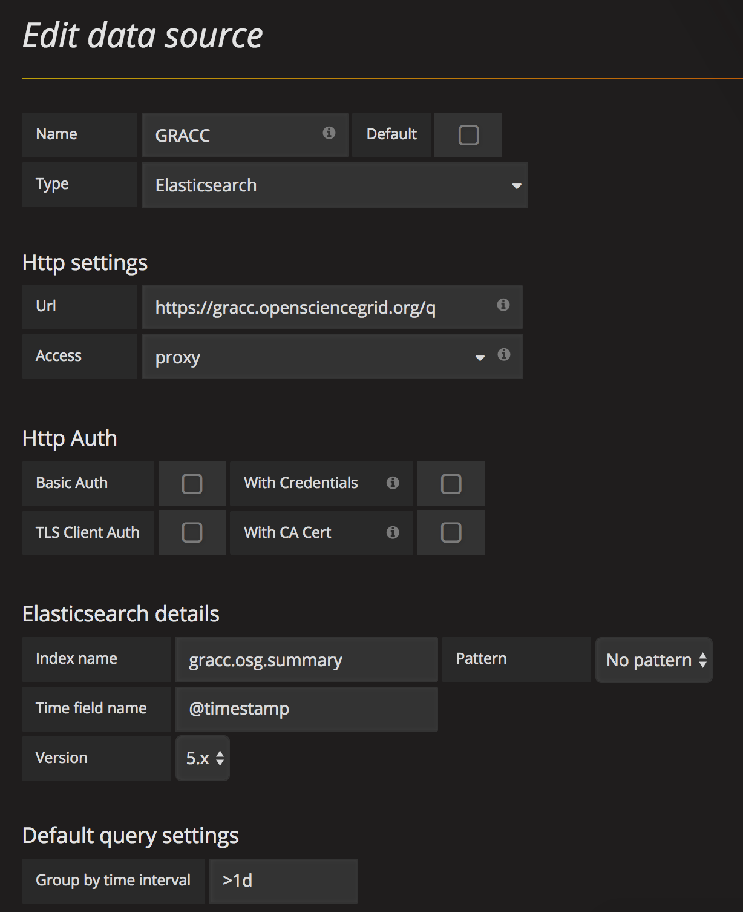

Accessing GRACC from Grafana
Existing Grafana
If you already have a Grafana instance that you maintain, it's very easy to add a GRACC datasource so you can start incorporating accounting data into your dashboards.
Datasource Settings
| Setting | Values |
|---|---|
| Type | Elasticsearch |
| Url | https://gracc.opensciencegrid.org/q |
| Access | Proxy (either should work) |
| Index name | gracc.osg.summary |
| Pattern | no pattern |
| Time field name | @timestamp |
| Version | 5.x |
| Group by time interval | >1d |
